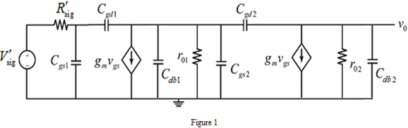

Write the expression for the trans-conductance.

Substitute 0.1 mA for  and 0.2 V for
and 0.2 V for 
Calculate the value of 
(a)
Refer to Figure P9.112 in the textbook for the circuit diagram.
The high frequency model of the circuit is shown in Figure 1.

Write the expression for the trans-conductance.
Substitute 0.1 mA for and 0.2 V for
Calculate the value of
The gate to source voltage is,
The output voltage is,
Substitute 1 mA/V for  and
and  for
for 
Hence, the dc voltage gain is,  .
.
(b)
Using the Miller’s approximation, the input capacitance at the gate of Q1 is,
Substitute 20 fF for , 5 fF for  , 100 for
, 100 for
Hence, the input capacitance is, .
(c)
Consider the resistance,
Calculate the time constant.

Hence, the frequency of the pole formed at the amplifier input is, .
(d)
Using the Miller’s approximation, the capacitance the node  is,
is,
Substitute 5 fF for  , 100 for
, 100 for
Hence, the capacitance the node  is, .
is, .
Using the Miller’s approximation, the total capacitance at drain of Q1 is,
Substitute 5 fF for , 20 fF for , and 505 fF for
Hence, the input capacitance of is, .
(e)
The frequency of the pole formed at the interface between the two stages is,
Substitute 530 fF for and for 
Hence, the frequency of the pole formed at the interface between the two stages is, .
(f)
The output node capacitance is,
Substitute 5 fF for  , 5 fF for
, 5 fF for  , 100 for .
, 100 for .
Hence, the output node capacitance is, .
The frequency of the pole formed at the output node is,
Hence, the frequency of the pole formed at the output node is, .
(g)
, the amplifier has a dominant pole.
Consider the all three poles.
The pole formed at the interface of is dominant, .
Therefore, the frequency at which the amplifier has a dominant pole is, .